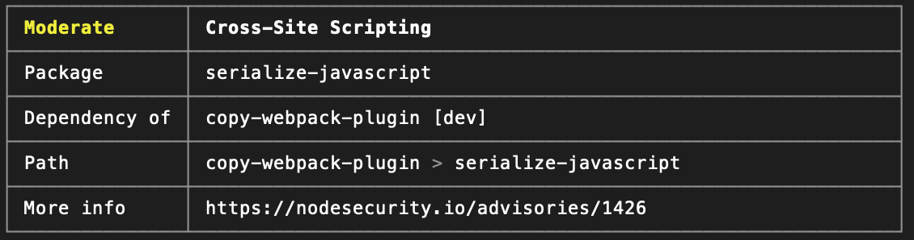
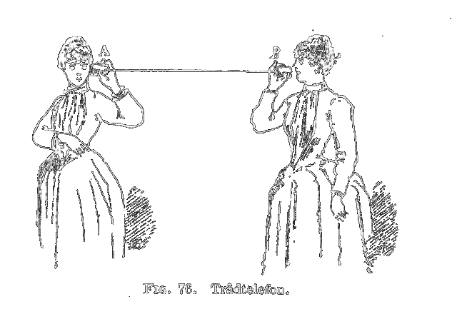

Security in Web applications
About me
Andre Gloukhmantchouk
Front-End Engineer @Facebook WhatsApp Web
Agenda
- Where'er the threats?
- Cross-Site Scripting (XSS)
- Examples of XSS out there
- Remediation
Where'er the threats?
Where'er the threats?
We as consumers want content and services online 24/7.
- Banking
- Health information
- Travel plans and tickets
- Communication with loved ones or business
Cross-Site Scripting (XSS)
XSS attacks occur when an attacker uses a web application to send malicious code, generally in the form of a browser side script, to a different end user.
XSS attacks usually performed by injecting untrusted scripts into trusted web contents.
Types of Cross-Site Scripting attacks
-
Reflected
Attacker needs to induce user to make a particular request containing their exploit.
-
Stored (or Persistent)
The exploit placed into application itself.
Why Cross-Site Scripting attacks common?
XSS is easy to introduce
eval(foo);
document.createElement('div').innerHTML='<foo>';
document.createElement('script').src='//foo';
document.createElement('div').innerHTML='<foo>';
document.createElement('a').insertAdjacentHTML(
'beforebegin', '<foo>');
new DOMParser().createFromString(
'<foo>', 'text/html');
window.open('//foo');
Why Cross-Site Scripting attacks common?
XSS is difficult to detect for humans or via static analysis
myElement[attr] = definitelyNotMalicious;
But we use react!
- React automatically escape all user input!
- The only framework without XSS mitigation bypasses1
Examples of XSS out there
Demo: simple text box
function SimpleTextInput() {
const [text, setText] = React.useState('Welcome!');
return (
<div>
<input
type="text"
onChange={e =>
setText(e.target.value)
}
/>
<p>{text}</p>
</div>
);
}
Demo: rich text box1
function RichTextInput() {
const [text, setText] = React.useState('Welcome!');
return (
<div>
<input
type="text"
onChange={e =>
setText(e.target.value)
}
/>
<p
dangerouslySetInnerHTML={
{__html: text}
}></p>
</div>
);
}
What would that do?
Signal Desktop1
Signal is a cross-platform encrypted messaging service developed by the Signal Foundation and Signal Messenger LLC.https://github.com/signalapp/Signal-Desktop
Signal Desktop
1 0-click XSS in quoted reply messages leading to Session Hijacking.
In Electron application XSS becomes RCE.
if (text) {
return (
<div className="text"
dangerouslySetInnerHTML={{ __html: text }} />
);
}
Demo: links
function LinksTextInput() {
const [links, setLinks] = React.useState([]);
return (
<div>
<input
type="text"
onKeyPress={e => {
if (e.key === 'Enter') {
setLinks(
[...links, e.target.value]
);
}
}}
/>
<ul>
{links.map(link =>
<li><a href={link}>{link}</a></li>
)}
</ul>
</div>
);
}
What would that do?
Lack of URL validation causes security issues in WhatsApp Web/Desktop
1 1-Click stored XSS on WhatsApp Web leading to Session Hijacking.
In Electron application XSS becomes RCE.
Demo: link reconstruction
function ParsedLinksTextInput() {
const [links, setLinks] = React.useState([]);
return (
// ...
<ul>
{links.map(link =>
<li><a href={`https://${link.domain}{link.path}`}>
{`https://${link.domain}{link.path}`}
</a></li>
)}
</ul>
// ...
);
}
What would that do?
Incorrect url reconstruction causes security issues in WhatsApp Web/Desktop
1-Click stored XSS on WhatsApp Web leading to Session Hijacking
XSS to Electron RCE
Demo: Node Integration and Context
1
nodeIntegrationwhen ON exposes Node.js APIs & modules to renderer2
contextIsolationwhen OFF allows preload script and renderer in the same JavaScript context
Demo: Node Integration and Context
nodeIntegration enabled
require('child_process')
.execSync('/Applications/Calculator.app');
nodeIntegration disabled but process is exposed
process.mainModule.require('child_process')
.execSync('/Applications/Calculator.app');
Demo: Context Isolation
let emit = this.Native.ipcRenderer.__proto__.emit;
this.Native.ipcRenderer.__proto__.emit = function(...args) {
emit.apply(this, args);
if (args[0].startsWith('ELECTRON_')) {
console.error(args);
// In ElectronInternal.IpcMainInternal, Jackpot!
let res = this.sendSync("ELECTRON_BROWSER_REQUIRE", 4, "child_process");
res = this.sendSync("ELECTRON_BROWSER_MEMBER_CALL", 5, res.id, "exec", [{
type: "value",
value: "open /Applications/Calculator.app"
}])
}
};
Remediation
Links Sanitization
const userSuppliedURL = e.target.value;
// path here starts with '/'
const parsed = new URL(userSuppliedURL);
// whitelist protocols
if (parsed.protocol !== "https:") {
return; // Bad Link!
}
// whitelist domains
if (parsed.domain !== "web.whatsapp.com") {
return; // Bad Link!
}
Electron Context Bridge1
// Preload script
const { contextBridge, ipcRenderer } = require('electron')
contextBridge.exposeInMainWorld(
'electron',
{
doThing: () => ipcRenderer.send('do-a-thing')
}
);
// Guest Page
window.electron.doThing();
Content Security Policy (CSP)1
CSP lets the browser enforce:
Where content can be loaded from (e.g. scripts, fonts, images, media, etc.)
Prevent (malicious) script execution
Disables inline
<script>elements by default, preventseval()in JShash / nonce based authentication for trusted scripts
Only allow HTTPS connections
Define CSP
as an http response headers
Content-Security-Policy: policy
as a meta tag
<meta http-equiv="Content-Security-Policy" content="policy" >
CSP: Script Src
Content-Security-Policy: script-src https://example.com/;
<script src="http://evil.com/evil.js" /> // Error!

<script src="https://example.com/js/library.js" /> // Ok
CSP: Script Nonce
Content-Security-Policy: script-src nоnce-{hash};
<script src="/*...*/" nonce="{hash}" />
CSP: Script Webpack config
new HtmlWebpackPlugin({
// ...
new CspHtmlWebpackPlugin({
'script-src': ["'unsafe-inline'", "'self'", "'unsafe-eval'"],
'style-src': ["'unsafe-inline'", "'self'", "'unsafe-eval'"],
},{
enabled: true,
hashingMethod: 'sha256',
nonceEnabled: {
'script-src': true,
'style-src': true,
},
}),
CSP: Script Webpack config
<meta http-equiv="Content-Security-Policy"
content="
script-src 'unsafe-inline' 'self' 'unsafe-eval'
'nonce-WpYn/8AoeUea09mkJFkRrQ==' 'nonce-W3DRAPOiqqSLosEhvG59Ew==';
style-src 'unsafe-inline' 'self' 'unsafe-eval'
'nonce-MRk2lpGYVUAZKE+91tA1Nw=='">
<script src="/static/js/main.chunk.js" nonce="W3DRAPOiqqSLosEhvG59Ew==" />
<script src="/static/js/0.chunk.js" nonce="WpYn/8AoeUea09mkJFkRrQ==" />
CSP: Script Src Report Only
Content-Security-Policy-Report-Only: script-src https://example.com/
report-uri https://www.facebook.com/csp/reporting/;
<script src="https://non-example.com.com/js/library.js" /> // Report error!
<script src="https://example.com/js/library.js" /> // Ok
CSP: Trusted Types
Content-Security-Policy: trusted-types myPolicy;
element.innerHTML = 'A String'; // TypeError!
element.innerHTML = trustedType; // Ok
CSP: Trusted Types Create Policy
const sanitizingPolicy = TrustedTypes.createPolicy('myPolicy', {
createHTML: (input) => myCustomSanitizer(input),
});
// sanitizingPolicy.createHTML returns a typed TrustedHTML object
element.innerHTML = sanitizingPolicy.createHTML(untrustedValue);
-
Supported in Chromium browsers
--enable-blink-features=TrustedDOMTypes -
Specification draft and the polyfill code
https://github.com/w3c/webappsec-trusted-types
npm audit
We live in world of NPM where 99% of your application is dependencies
npm auditoryarn auditshows existing security issues and severity in dependencies
npm audit
Remediation
Never use
dangerouslySetInnerHTMLwith user-supplied input.This includes using
document.createElementandelem.innerHtmlin util scripts.Use iFrame sandboxing when sanitizing user provided input.
Leverage whitelisting to prevent unsafe URI schemes (and external hostnames)
Remediation
Re-use existing components instead of
HTMLAnchorElementMake generous use of
npm auditfor dependencies and keep your dependencies up to dateLint rules to detect use of dangerous functions and bad coding patterns
Be excited and ready to adopt new security features
Remediation
-
Use recomended security settings for
nodeIntegrationandcontextIsolationin your Electron Application -
Explore API to expose only necessary integrations to browser context1
Remediation
- Security Teams
- External services like WhiteHatSec1
Thank you for listening!
Please, ask questions!
To read more
-
https://owasp.org/www-project-top-ten/
OWASP Top Ten
-
https://cve.mitre.org/cgi-bin/cvekey.cgi?keyword=WhatsApp
Common Vulnerabilities and Exposures by U.S. Department of Homeland Security
-
https://www.facebook.com/threatexchange
ThreatExchange By Facebook
-
https://habr.com/ru/post/445932/
Безопасность клиентских приложений: практические советы для Front-end разработчика by Alexander Rudenko
-
https://www.linkedin.com/pulse/even-faster-single-page-application-9security-sergei-iastrebov/
Even Faster Single Page Application: 9.Security by Sergei Iastrebov
Mitigation bypassess
Why do mitigations exisits
Some frameworks and libraries has XSS vulnerability in their base. They are impossible to fix and instead are mitigated by workarounds.
Mitigation bypassess
Mitigations do not fix the vulnerability. They try to make the attacks harder instead. The XSS is still there, it’s just presumably harder to exploit it1.
WhatsApp perspective
WhatsApp perspective
Traditionally user generated content has quite a few stops before it reaches other participants.
WhatsApp perspective
In WhatsApp world user generated content has only 2 stops.
